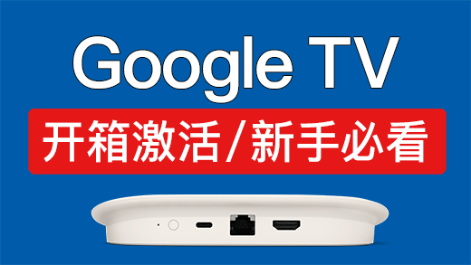
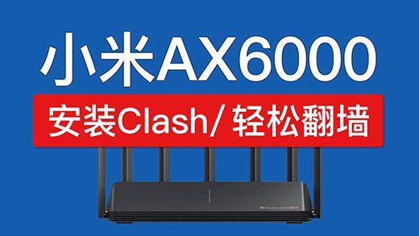
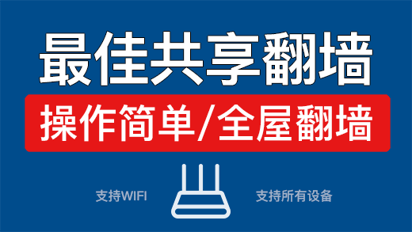
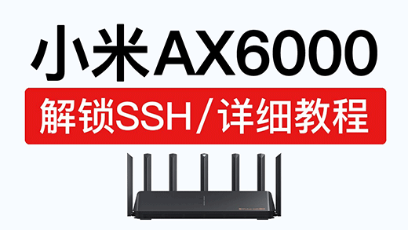
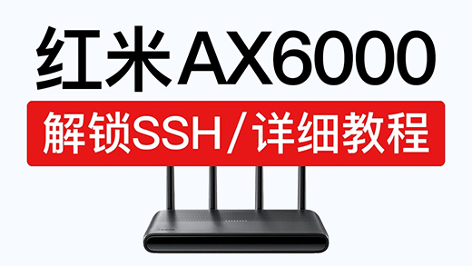
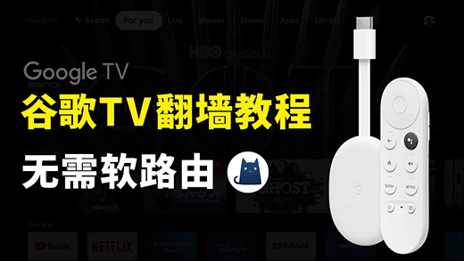
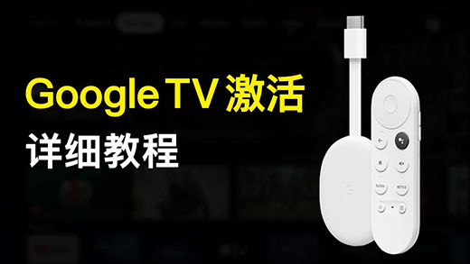

天天科技
首页
软件下载
视频教程
路由器
电视相关
华硕路由器刷梅林固件、华硕路由器刷官改固件 | 刷回官方固件

Google tv streamer 4k 2024 开箱/激活/评测，谷歌tv盒子 (4k) 使用教程
ShellClash使用教程，小米路由器安装shellcrash，功能强大，轻松科学上网
电视科学上网教程，安装Clash meta, v2rayNG vpn，电视翻墙app
谷歌三件套一键安装方法，小米谷歌三件套是什么，google play store app怎么下载？
小火箭/圈X/美区礼品卡购买教程，shadowrocket购买，app store 美区礼品卡充值平台
chrome 翻译扩展程序，功能强大！谷歌翻译无法翻译此网页，谷歌翻译用不了无法使用替代插件
Google Voice 购买教程，使用保号教程，谷歌voice gv号码购买平台
电视看奈飞方法，小米电视翻墙看netflix，操作简单！电视看网飞教程
Apple TV 小火箭正式版来了！Shadowrocket tvos 翻墙使用教程，apple tv vpn app，科学上网设置
Apple TV 旁路由设置教程，轻松实现全家设备科学上网，apple tv vpn设置网关科学上网
超简单的电视翻墙方法，不用软路由，电视安装clash和v2ray app，电视盒子翻墙apk，小米电视vpn使用教程
小米电视安装apk软件方法，安装第三方应用app，红米电视安装浏览器方法，小米电视安装失败解决方法

小米ax6000安装clash翻墙教程，ax6000 和 ax9000 shellclash 小米路由器科学上网设置

Windows电脑共享翻墙网络，给手机电脑,电视,ps5等设备科学上网，电脑共享vpn热点wifi设置
谷歌翻译不能用了，解决方法！谷歌翻译退出中国了，google翻译不能用

小米路由器AX6000解锁SSH，只需一台电脑轻松搞定，xiaomi ax6000固件刷机，AX9000 ssh

红米路由器AX6000解锁SSH，操作非常简单，redmi ax6000 ssh 固件刷机
电脑共享翻墙网络，共享给全家科学上网（电脑/手机/电视/googletv/appletv）共享vpn热点wifi全屋翻墙
Apple tv 4k 看Netflix，支持在电脑、手机、电视上观看，苹果tv看奈飞教程|netflix机场推荐

Google TV 科学上网教程，通过clash实现翻墙，谷歌tv翻墙方法 vpn 设定

Google TV 激活方法：新手详细使用教学，谷歌tv激活连不上wifi解决方法
Google TV 网络受限解决方法，操作简单，谷歌电视盒子设置方法
Apple TV 4K 开箱使用，在国内大陆使用方法（激活设置/安装软件）苹果电视盒评测和苹果tv怎么用？
Apple TV 4k 2022 科学上网方法，轻松实现苹果tv翻墙，apple tv vpn软件设定|clashx pro 网关翻墙设置